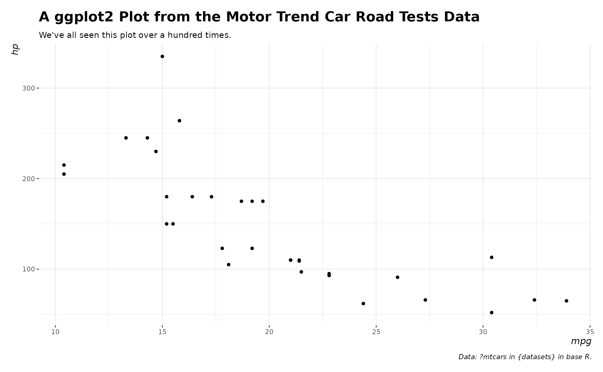
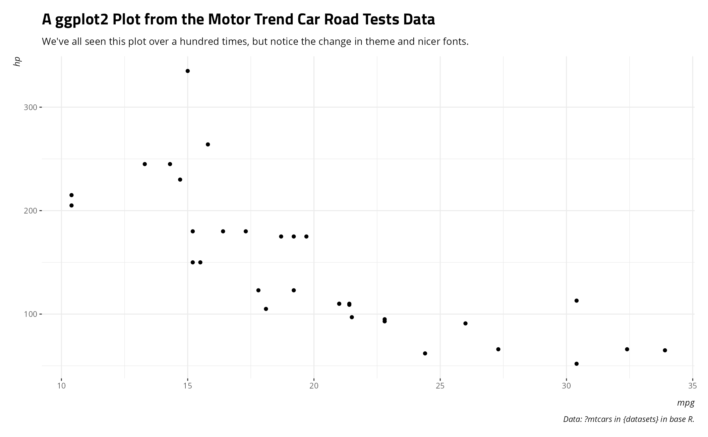
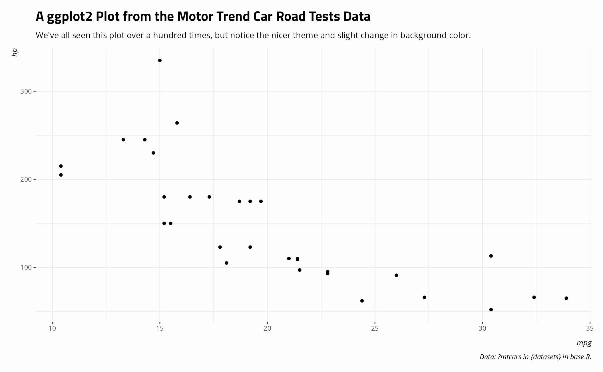

theme_steve() was a preferred theme of mine a few years ago. It is
basically theme_bw() from ggplot2 theme, but with me
tweaking a few things. I've since moved to theme_steve_web() for most things
now, prominently on my website. It incorporates the "Open Sans" and "Titillium Web"
fonts that I like so much. post_bg() is for changing the backgrounds on
plots to better match my website for posts that I write.
theme_steve(...) theme_steve_web(...) post_bg(...)
| ... | optional stuff, but don't put anything in here. You won't need it. |
|---|
post_bg() takes a ggplot2 plot and changes the background to have a color of
"#fdfdfd". theme_steve() takes a ggplot2 plot and formats it to approximate
theme_bw() from ggplot2, but with some other tweaks. theme_steve_web() extends
theme_steve() to add custom fonts, notably "Open Sans" and "Titillium Web". In all cases, these
functions take a ggplot2 plot and return another ggplot2 plot, but with some cosmetic
changes.
theme_steve_web() depends on having the fonts installed on your end.
It's ultimately optional for you to have them.
[ggplot2::theme]
# \donttest{ library(ggplot2) ggplot(mtcars, aes(x = mpg, y = hp)) + geom_point() + theme_steve() + labs(title = "A ggplot2 Plot from the Motor Trend Car Road Tests Data", subtitle = "We've all seen this plot over a hundred times.", caption = "Data: ?mtcars in {datasets} in base R.")ggplot(mtcars, aes(x = mpg, y = hp)) + geom_point() + theme_steve_web() + labs(title = "A ggplot2 Plot from the Motor Trend Car Road Tests Data", subtitle = "We've all seen this plot over a hundred times, but notice the change in theme and nicer fonts.", caption = "Data: ?mtcars in {datasets} in base R.")ggplot(mtcars, aes(x = mpg, y = hp)) + geom_point() + theme_steve_web() + post_bg() + labs(title = "A ggplot2 Plot from the Motor Trend Car Road Tests Data", subtitle = "We've all seen this plot over a hundred times, but notice the nicer theme and slight change in background color.", caption = "Data: ?mtcars in {datasets} in base R.")# }